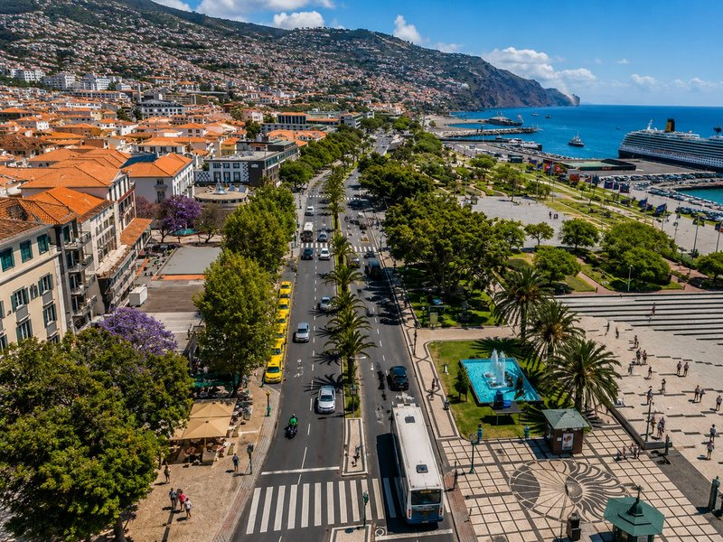

STOPP 1
⏱ 15-20 Min. hier
1/6
Route wird geladen...

Routendetails werden geladen...
In Google Maps öffnen
NÄCHSTER STOPP ->
Zurück zum Schiff
05:00:00
Zurück bis: 16:30
+45 Min. Puffer
Rückweg anzeigen